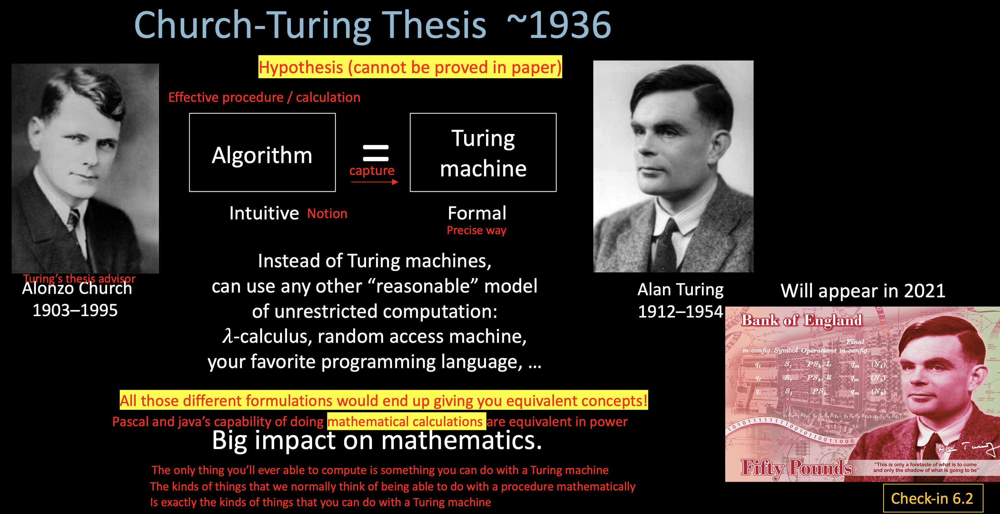
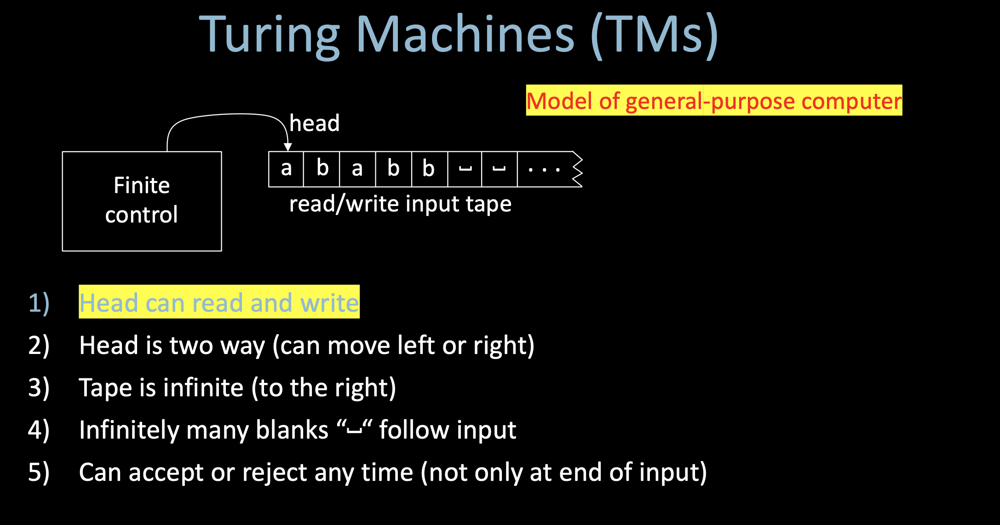
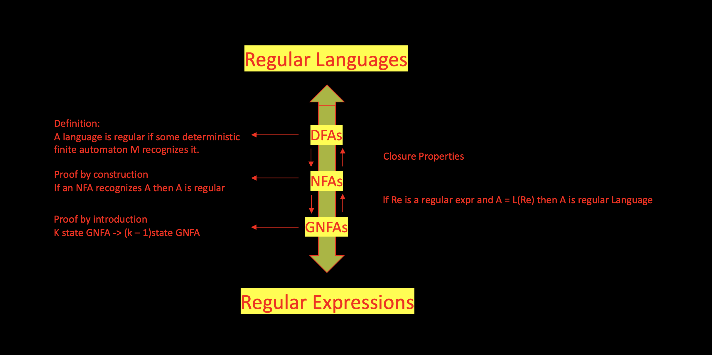
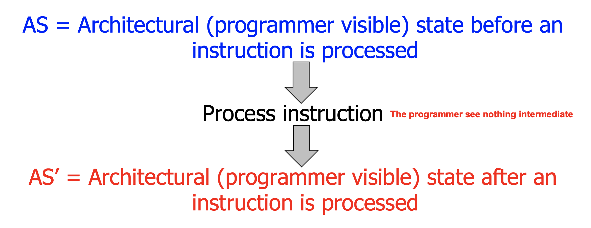
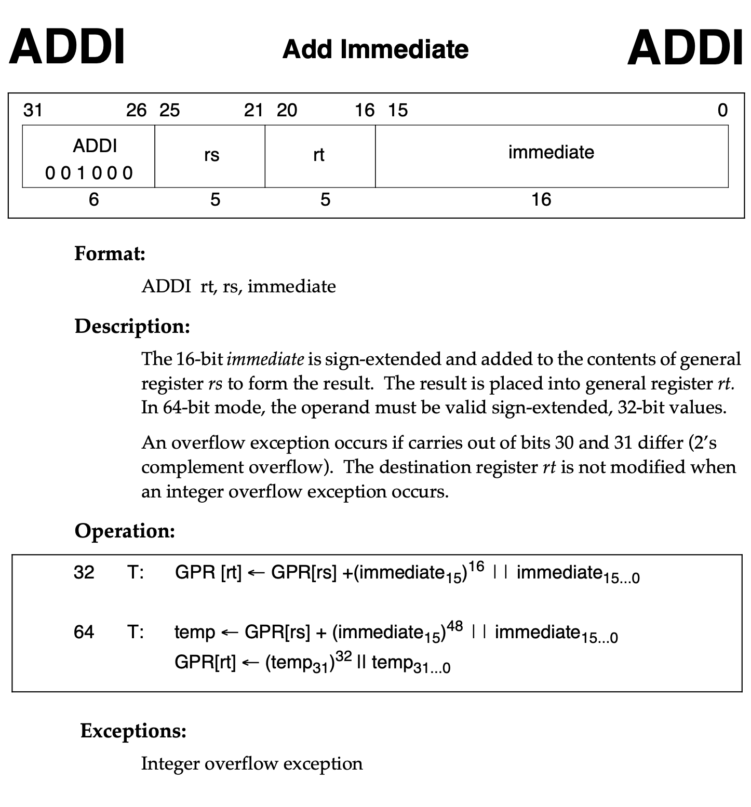
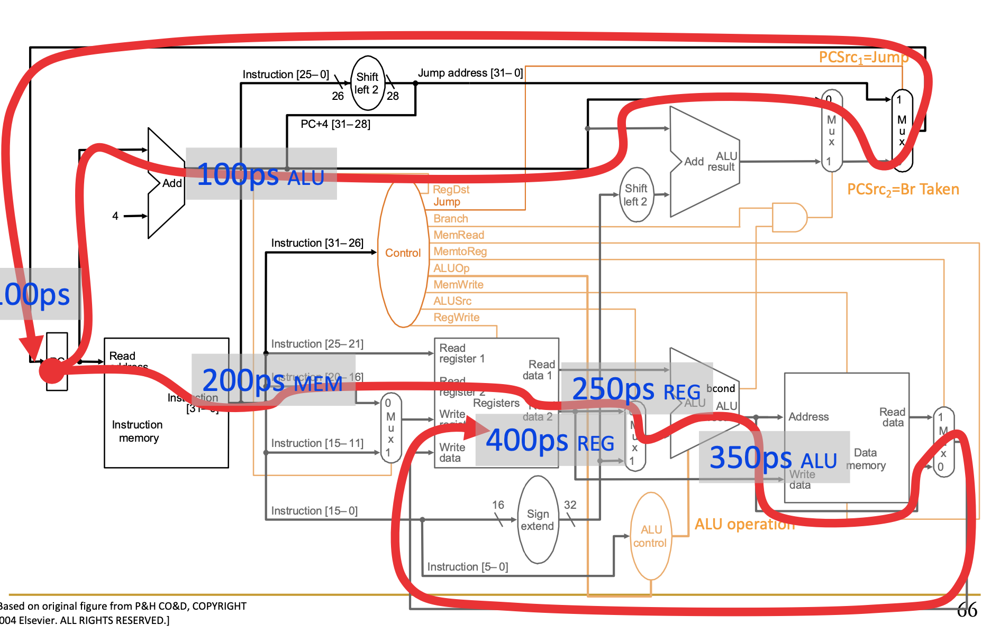
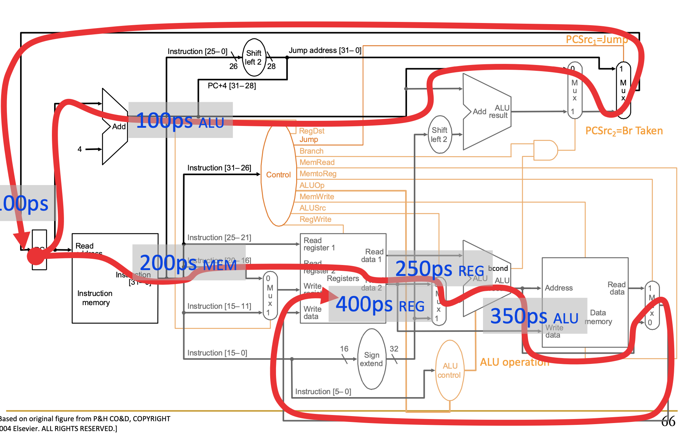
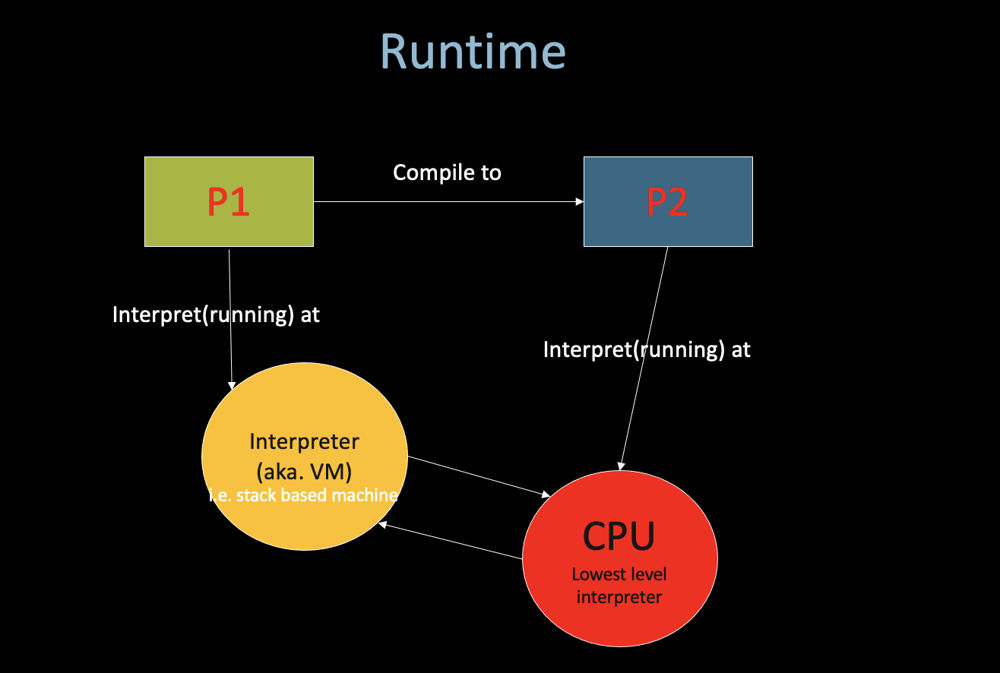

Angorithm4 Webinar #6
Cohost by Jiawei Wang 2021-11-26
1. Announcement
1. About angorithm4.org
- In Progress...
- With database, and support notes display, video playing etc.
- About one month (till end of this year)
- Runs on my Raspberry Pi 4B
- A challenge for me, since it won't based on any web framework
- Maybe you can help...
2. About Linux:
- Run Ubuntu on VirtualBox is not a good idea..., Mostly, especially when you do not have a desktop computer.
- Instead, Try boot Ubuntu sepreate from Windows (Install ubuntu 20.04 LTS alongside windows 10)
- All you need is a 32GB SD Card and this video
2. Microarchitecture - Single-Cycle
1. Turing Machine


T-recognizable:
If the Turing machine is always reject by looping forever (From state to state but never stop in the final state).
One example of T-recognizable: (Hilbert's 10th Problem)
- Equations of polynomials where solutions must be integers.
- Let D = {p | polynomial p(x1, x2, ..., xk) = 0 has a solution in integers}
- E.g.
3x^2 - 2xy -y^2z = 7 Solution: x = 1, y = 2, z = -2 - Hilbert's 10th problem: Give an algorithm (TM) to decide D. (Only yes or no)
- Matiyasevich proved in 1970: D is not decidable.

2. Single-Cycle Machine

- Each instrurction takes a single clock cycle to execute
- From ISA point of view, there are no “intermediate states” between AS and AS’ during instruction execution
- All six phases of the instruction processing cycle take a single machine clock cycle to complete
- Fetch
- Decode
- Evaluate Address
- Fetch Operands
- Execute
- Store Result

- Bottom neck of Single-Cycle Machine: The slowest instruction determines cycle time -> long cycle time (STORE)
- We can have programmer-invisible state to optimize the speed of the instruction execution: multiple state transitions per instruction
- AS -> AS' (transform AS to AS' in a single clock cycle)
- AS -> AS + MS1 -> AS + MS2 -> ... -> AS' (take multiple clock cycles to transform AS to AS')
- Multi-Cycle Machine: The slowest "stage" determines cycle time
3. MIPS-Simulator
- Source Code: Angold-4/MIPS-Simulator
- Based on CMU 18-447 Lab1
MIPS
- Microprocessor without interlocked Pipelined Stages
- The hardware doesn’t do anything to detect the dependency between instructions, everything is handled by the software, so that you can design a microprocessor that is simple
- Using C to simulate MIPS-hardware
Example


/*
* handle_addi
* Add Immediate
* Opcode: 8
* The 16-bit immediate is sign-extended and added to the contents of
* general register rs to form the result. The result is placed into general register rt.
*/
int handle_addi(uint32_t instr) {
// decode source code and target register
int rs = decode_i_rs(instr);
int rt = decode_i_rt(instr);
int32_t immediate = (int32_t) decode_i_immediate(instr);
// Note: addi normally raises exception on overflow
// however, this functionality is not implemented here
NEXT_STATE.REGS[rt] = CURRENT_STATE.REGS[rs] + immediate;
NEXT_STATE.PC = CURRENT_STATE.PC + 4;
return STATUS_OK;
}
 

3. Eva
- Source Code: Angold-4/Eval
Runtime semantics should be preserved !
